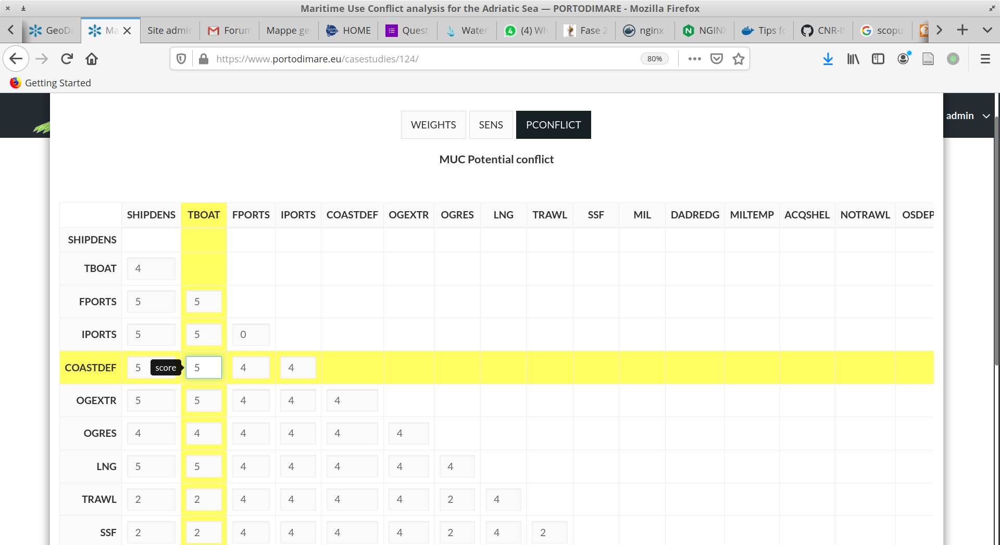
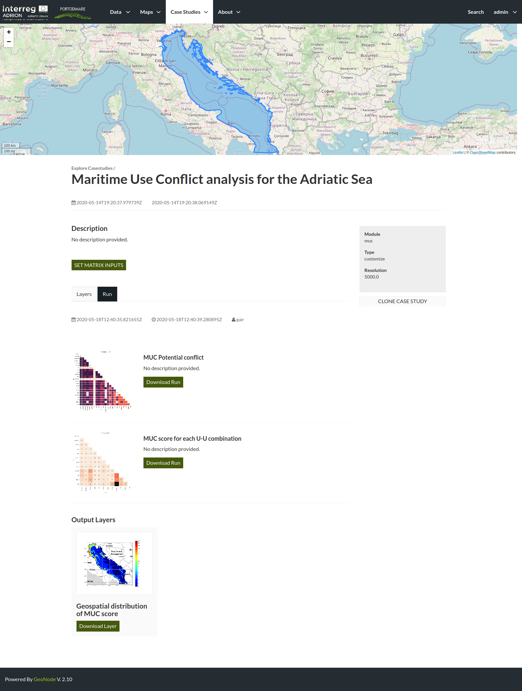
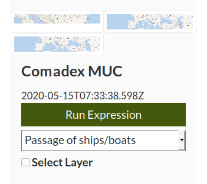

MUC Module¶
From Case studies select the Module MUC menu item to explore the list of available case studies for that module.

GAIR case studies menu
MUC case studies list.
Each list item for MUC related case studies present a small overview of the domain area, the case study type (default or customized), resolution of the grid, Case study title and description.
MUC case study list item.
To open a case study click on the title or “open” button. The detail page presents all layers and layer expressions already configured for the case study

MUC case study detail page
In the case study detail page (ca-cs-detail) are
presented the following elements:
- a map section with the domain area boundaries;
- name and description of the case study;
- the list of input layers as described in muc-module-inputs;
- the SET MATRIX INPUTS button to change values of potential conflict matrix as described in :muc-module-inputs;
- the run case study button to run the MUC module within this case study;
6) the clone case study button (6) to create a customized case study starting from this configuration;
You can either set configuration data in the default case study (input layers and input matrix) or clone the current case study to create a customized one
To check the content of a layer you can click on the layer thumbnail to open a new window with a larger preview image and a Download layer control.
MUC case study layer preview
Configure default run¶
Select input layers from list. You’ll see the list of input layers displayed as a grid with layer name, thumbnail and selection control. The input layers thumbnails are is loaded directly from the API server and in case the thumbnails are not showed as usual could be due to a connection trouble with the external server.
Please check the layers list and identify what kind of input each layers refers to.
Example of MUC input layers¶ Layer Input type Domain area boundary Embedded in case study def Grid of analysis Resolution (required) use Industrial ports human use use Pipelines human use You can quickly select all layers using
select all layerscheckbox, this will compute MUC considering all enviromental components and all human uses available- If you need to investigate the cumulative effects on a subset of components or human uses you can manually select (or deselect) the layers to consider.Review or change input values for potential conflict matrix. Click on
SET MATRIX INPUTSto open the matrix input widget for potential conflictMUC potential conflict matrix input widget
Click on Run Case Study to run teh module for the current case study. When the Run is complete the results will be listed in the same page on a new tab.
MUC results list: json results (1) and raster outpus (2)
To download the json output right click on Download Run button and select Save destination To download raster outputs jus click on Download Layer To make another Run click again on the Layer tab (3).
Clone case study to a customized one¶
select Clone case Study: the new case study will open in the same page but you’ll see Type: customized in the summary box over 6 (
ca-cs-detail)write down the Case Study ID number in the las part of the new URL (e.g.
https://www.portodimare.eu/casestudies/XXX/)create new layer expression and add it to case study as described in create_new-gd-exp section and link to the new created case study (you can identify the correct one with title and ID see gair-gdb-create number 2).
to add new layers already stored in the geoportal you need to create a simple layer expression with just one layer without operators.
get back to the customized case study using
View case studyButton (gair-gdb-viewcs)click Run Expression (
gair-gdb-exp-run) for each customized layer then select the coded label from dropdown list to assign the result to a MUC inputMUC coded label selection
Select layers and set matrix inputs as described in Configure default run section